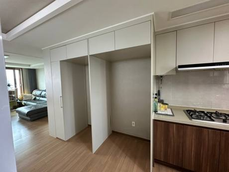
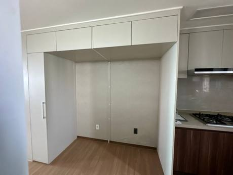
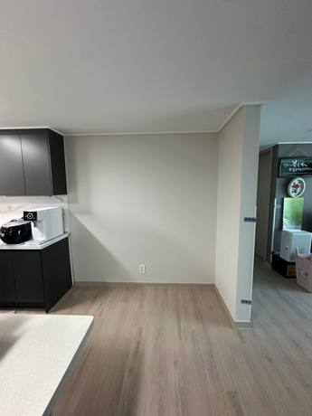
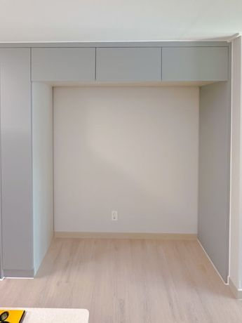

삼성 비스포크 키친핏을 옵션 냉장고장에 넣으려다 설치 불가를 듣는 집이 많아요. 기둥을 빼서 자리를 만들거나, 무옵션 세대라면 비스포크 설치 가이드에 맞춰 장을 새로 짜요.
아산은 천안과 함께 다니는 지역이에요. 탕정과 배방의 새 아파트처럼 옵션 냉장고장이 키친핏 냉장고와 안 맞는 집에서 칸막이를 빼거나 새로 짜 드려요.
아산 비스포크 냉장고장
옵션 장의 기둥 때문에 안 들어가면 기둥을 빼고 보강해서 자리를 만들어요.
기존 냉장고장 자재를 다시 써서 공간만 넓힐 수 있어요.
무옵션 세대는 비스포크 모델에 맞춰 처음부터 짜요.
처짐·기울어짐은 평생 무상으로 책임져요.
가까운 지역 대표 현장
대전 서구 가장동 삼성래미안


기존 냉장고장은 가운데 칸막이를 기준으로 왼쪽은 펜트리, 오른쪽은 냉장고 자리로 나뉘어 있었어요. 새로 산 삼성 비스포크 냉장고가 들어갈 자리가 없어 설치가 불가능했어요.
새 비스포크 냉장고 규격에 맞는 키친핏 냉장고장이 완성됐고, 공간이 넓어 보이고 분위기도 바뀌었어요.
진행 순서
아래쪽이 전체적으로 틀어진 장이라 까다로웠지만 기존 장을 모두 철거했어요.
미리 실측해 만들어 온 장을 1도어 냉장고 3개가 들어가는 공간으로 설치했어요.
요청하신 대로 키큰장을 오른쪽에 넣었어요.
칸막이 자리 빈 바닥을 마루로 채우고 문짝을 달아 마무리했어요. 도배는 전체 도배 예정이라 손대지 않았어요.
실제 현장


기존 냉장고장 자재를 다시 써서 공간만 넓혔어요.


중간 칸막이와 기둥을 빼고 키친핏으로 붙여 설치.


무옵션을 고른 집에 냉장고장을 처음부터 제작해 설치.
기둥 제거 리폼 30만원, 새로 짜기 100만원부터 (VAT 별도). 사진을 보고 우리 집 금액을 알려드려요. 사진 보내고 금액 받기 · 비용 자세히 보기
문자 견적
작업 중엔 소음 때문에 전화를 못 받을 때가 많아요. 문자로 남겨주시면 작업 끝나는 대로 바로 연락드려요.
자주 묻는 질문
네. 아산 비스포크 냉장고장 상담부터 실측, 시공, AS까지 대표가 직접 가요. 사진과 아파트 이름을 문자로 보내 주시면 일정과 금액을 함께 알려드려요.
대부분 냉장고장 가운데 기둥이나 깊이 때문이에요. 냉장고 모델명과 장 사진을 보내 주시면 기둥 제거로 될지, 새로 짜야 할지 알려드려요.
현장 사진 2~3장, 냉장고 모델명, 아파트 이름을 문자로 보내 주세요. 작업 중엔 전화를 못 받을 때가 많아 문자가 가장 빨라요.